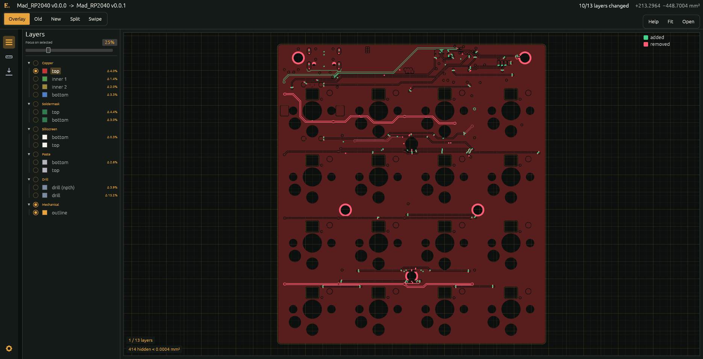
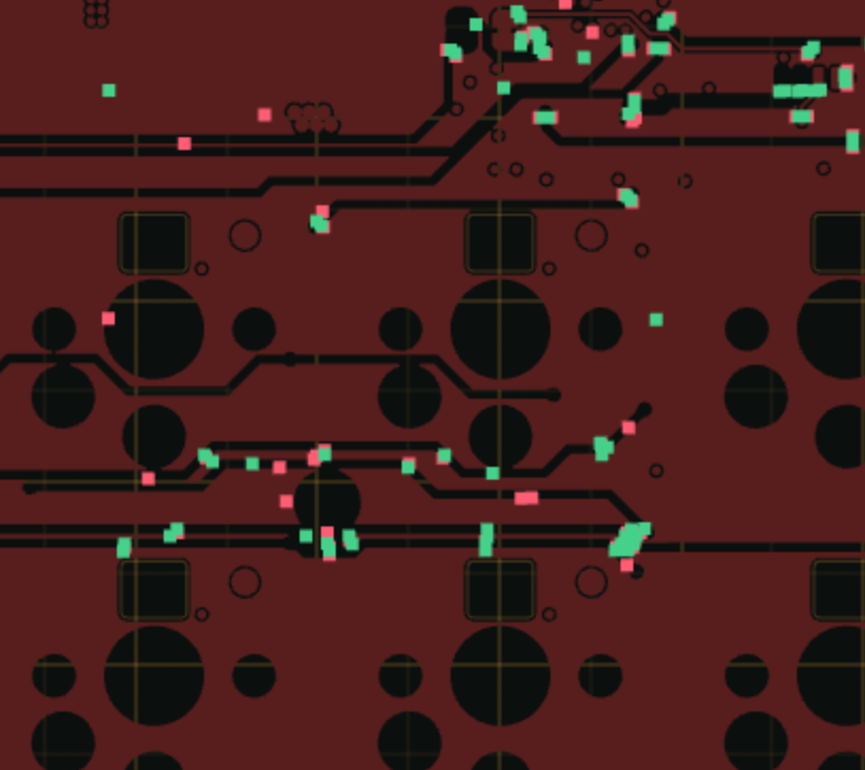

PCB visual & geometric diff.
Point etchy at two revisions of a board's fab output. It shows — and measures — exactly what changed. Fast, open source, written in Rust.


What it does
What it doesSee what changed
Highlights every added and removed feature on each layer, then measures it — changed area and region count.
See it & measure it
The CLI prints a per-layer summary, and writes JSON, Markdown, per-layer SVGs, or one self-contained HTML report. The viewer shows the same diff in overlay, old, new, split and swipe.
Same-board only
Compares two revisions of the same board on absolute coordinates — no auto-aligning. If the boards don't match, it errors instead of showing a wrong diff.
Gate it in CI
Exit codes 0 / 1 / 2, plus thresholds on changed area and region count — scoped per layer, so copper fails the build and silkscreen churn doesn't. A GitHub Action posts the layer-by-layer table on the pull request.
Schematic PDFs too
Schematic PDFs get a page-by-page pixel diff with overlay PNGs. Pages pair by content, so an inserted sheet becomes one extra row instead of desyncing every page after it.
One binary, no runtime
Static per-OS binaries and a distroless container — nothing to install alongside it. Git refs work too: diff two committed revisions without a checkout.
Added in green, removed in red.
Mad_RP2040 — two real revisions.
etchy's actual output diffing a real 4-layer board's fab Gerbers (v0.0.0 → v0.0.1). 10 of 13 layers changed.

| Layer | Status | + mm² | − mm² | + regions | − regions |
|---|---|---|---|---|---|
| top-copper | changed | 80.16495 | 127.98536 | 133 | 121 |
| inner-copper1 | changed | 6.47136 | 67.29263 | 46 | 82 |
| inner-copper2 | changed | 11.24153 | 95.33530 | 57 | 86 |
| bottom-copper | changed | 72.85102 | 91.27871 | 642 | 494 |
| top-mask | changed | 2.93706 | 28.30328 | 6 | 12 |
| bottom-mask | changed | 5.45812 | 30.82435 | 18 | 24 |
| bottom-silk | changed | 1.19345 | 0.80759 | 10 | 9 |
| bottom-paste | changed | 4.25040 | 4.25040 | 16 | 16 |
| drill-npth | changed | 26.05755 | 0.63200 | 8 | 2 |
| drill | changed | 2.67094 | 1.99073 | 31 | 17 |
| top-silk | unchanged | 0.00000 | 0.00000 | 0 | 0 |
| top-paste | unchanged | 0.00000 | 0.00000 | 0 | 0 |
| outline | unchanged | 0.00000 | 0.00000 | 0 | 0 |

Generated by etchy old/ new/ on the board's release fab pack — same-board guard passed.
Board: Mad_RP2040 by Cimos — open hardware, diffed from its published release fab packs.
Run it locally, gate it in CI.
Download v0.1.1 from Releases: choose a viewer installer (.msi, .dmg, .AppImage, or .deb), install the Apple Silicon Homebrew cask, download a CLI archive for your OS, or pull the container. Full commands are in the install docs.
# Homebrew (Apple Silicon) brew install --cask cimos/etchy/etchy # Container docker pull ghcr.io/cimos/etchy:v0.1.1 etchy old/ new/ # per-layer summary etchy old/ new/ --format json # machine-readable, for CI etchy old/ new/ --html diff.html # one self-contained report
# fail only if copper changed by more than 0.5 mm²
- name: PCB diff
run: etchy old/ new/ --gate-layers copper --fail-on-area 0.5
Or add the Action — five lines, and every pull request that touches Gerbers gets a sticky layer-by-layer diff comment:
- uses: Cimos/etchy@v0.1.1
with:
old: fab/rev-a
new: fab/rev-b
comment: true
Current release: v0.1.1.
Usable today, with the next parser milestone planned.What's new in 0.1.x
0.1.0 was the public release, with CLI archives, the container, GitHub Action, and schematic PDF diff. 0.1.1 adds viewer installers, CLI-on-PATH packages, and Homebrew.
Next up: native KiCad parsing
Planned for 0.2.0: read .kicad_pcb files directly so KiCad users can skip the Gerber export.